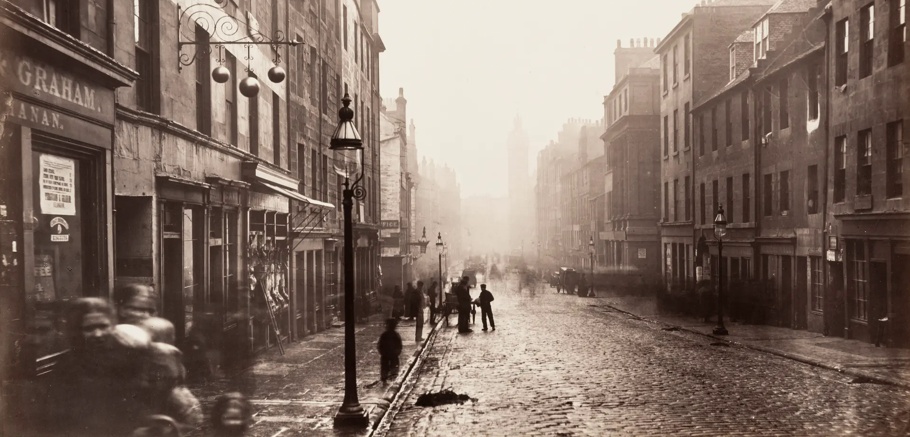
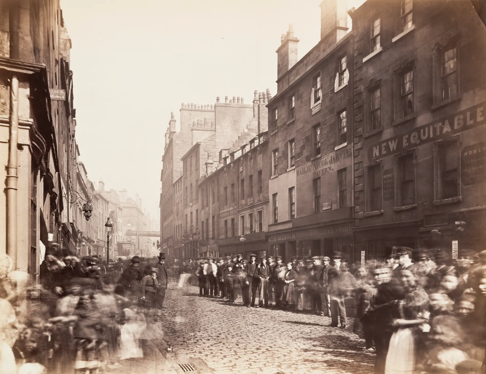
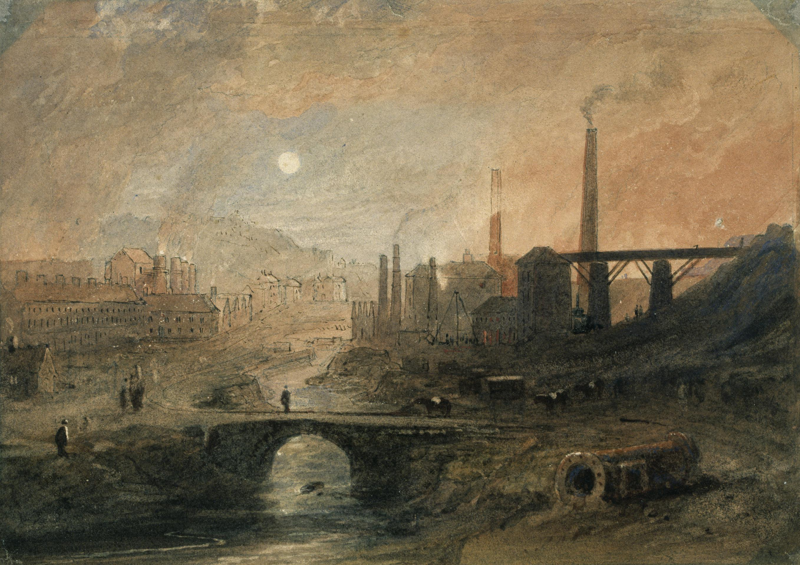
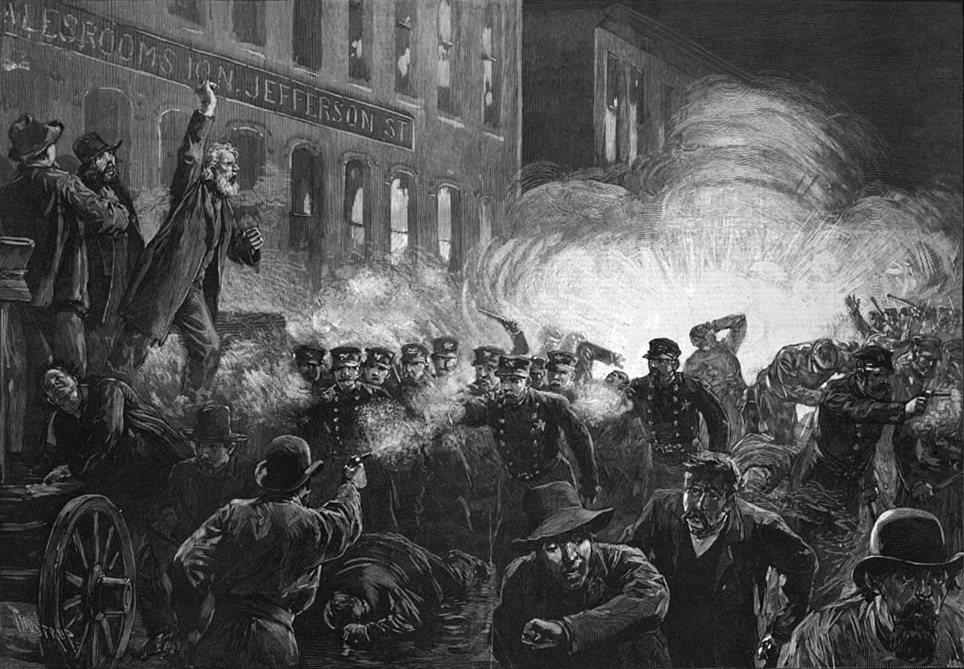
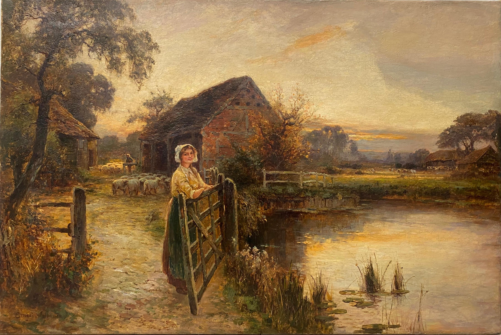
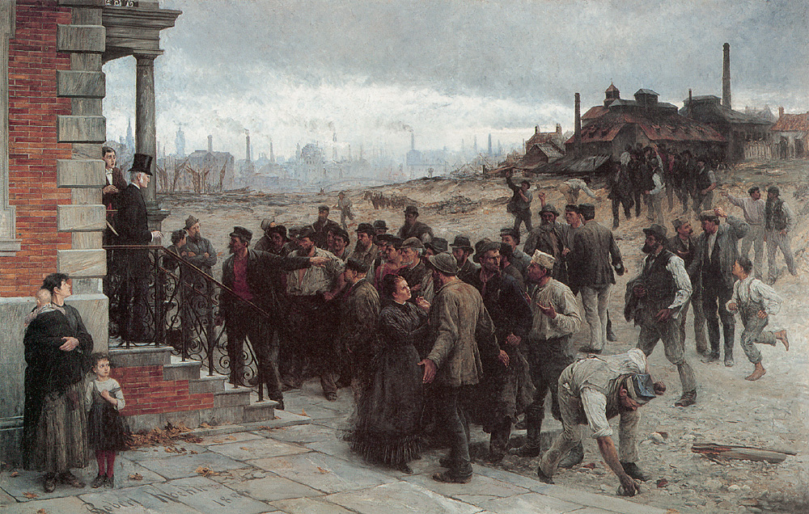

1. К рабочему класcу Великобритании

2. Предисловие


3. Введение

4. Промышленный пролетариат

5. Большие города

6. Конкуренция

7. Ирландская иммиграция

8. Выводы


9. Отдельные отрасли труда

10. Другие отрасли труда

11. Рабочее движение
12. Горнопромышленный пролетариат

13. Сельскохозяйственный пролетариат

14. Отношение буржуазии к пролетариату